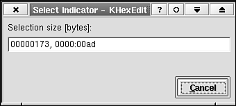

by Espen Sand
A dialog is a very important part of an application. If the dialogs are not well-designed or suited for their task, the usefulness of the application is often greatly reduced. This chapter describes how to successfully create dialogs that are easy to use, that have a distinct KDE look and feel, and that are simple to develop and later extend and maintain by the developer. The KDE interface library (kdeui) contains several building blocks and widgets that, combined with the regular widgets and layout managers of the Qt library, provide you with what you need to get an optimal result. I emphasize the use of a framework widget named KDialogBase. The use of the KDialogBase class greatly simplifies dialog writing because it takes care of much of the tedious work that has to be repeated for every dialog you make.
Although several interface builders are available that can create dialogs for you (see Chapter 18, "The KDevelop IDE: The Integrated Development Enviroment for KDE"), the KDE interface library widgets are designed to simplify a hand-coded design process. In addition, they automatically give your dialogs the look and feel recommended by the KDE style guide, which is available on the Web page: http://developer.kde.org/documentation/standards/kde/style/basics. Several examples illustrate how to use these basic widgets.
8.1. Getting Started with the Dialog WidgetsLet's start with an example. Figure 8.1 shows a very simple dialog that is used in the standard KDE hex editor—KHexEdit. The code in Listing 8.1 shows how the dialog class is derived from KDialogBase. Most of the initialization of KDialogBase class takes place in the constructor of that class. The class definition is normally placed in a separate header file, but for simplicity it is shown here together with the regular code. Figure 8.1. This dialog is used to display the number of bytes currently selected in KHexEdit's editor window. The value is printed in decimal and hexadecimal.  Example 8.1. Simplified Listing of the SelectDialog Dialog Class
The KDialogBase widget is described in more detail in the section "Building Blocks (Manager Widgets)" later in this chapter. Notice the signature of the constructor on line 18. These are the arguments you should at least provide when making a dialog. Note as well that in the class definition (line 6), the argument has been assigned default values. The values shown in the code are the most commonly used in KDE and Qt code and is in many respects assumed to be the standard implementation. The parent widget is the widget around which the dialog is centered. Normally, you use the top-level widget or your application as the parent of a dialog. The dialog will then be positioned in the center of your main application window. If the parent is 0 (null), the dialog is centered with respect to the desktop. The name is the name of the dialog widget. It should not be used for the dialog title string (often called the caption) because it is not of type QString (the Unicode string class). The name is used to identify the widget during development and is very handy if you need to dump a widget hierarchy. You can safely assign 0 to the name if you don't need it. The last argument, modal, determines the modality of the dialog. See the section "Dialog Modality—Modal or Modeless Dialogs" later in this chapter for an extended description and a description of the implications of modal and modeless dialog behavior. |